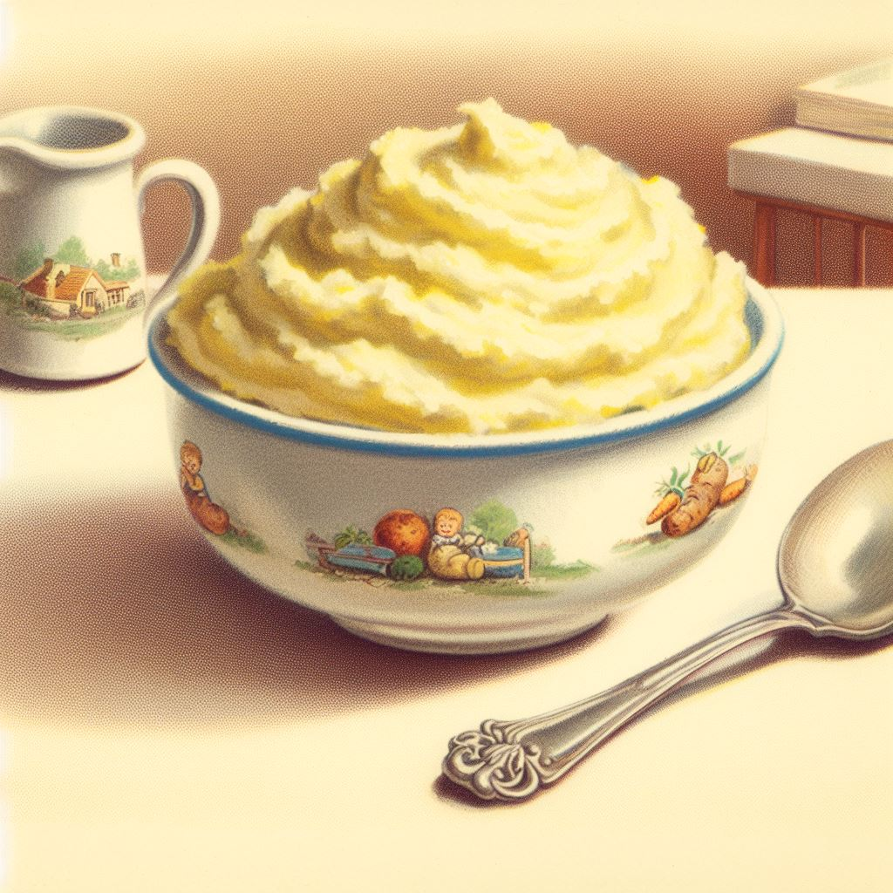

Back
Mashed Potatoes

Description
Mashed potatoes are incredibly good because they're both simple and satisfying. The creamy texture and buttery taste make your mouth smile with every bite. They're like a warm hug on a cold day or a happy dance for your taste buds. You can make them for special occasions like Thanksgiving or just when you need some comfort food. Kids and adults both love them, and they're a classic side dish that never goes out of style. So, if you haven't tried mashed potatoes yet, you're in for a tasty treat!
Ingredients
- 4 large russet potatoes
- 1/2 cup milk
- 4 tablespoons unsalted butter
- Salt and pepper, to taste
Steps
- Peel and chop the potatoes: Start by peeling the potatoes and cutting them into evenly sized chunks, about 1-inch cubes. This will help them cook more evenly.
- Boil the potatoes: Place the potato chunks ina large pot and cover them with cold water. Add a pinch of salt to the water. Bring the water toa boil over medium-high heat, then reduce the heat to medium-low and let the potatoes simmer for about 15-20 minutes, or until they are fork-tender. You should be able to easily pierce a potato chunk with a fork without resistance.
- Drain the potatoes: Once the potatoes are cooked, drain them in a colander to remove all the water.
- Heat the milk and butter: In a small saucepan, heat the milk and butter over low heat until the better is melted. You want the milk and butter to be warm when you add them to the potatoes.
- Mash the potatoes: Return the drained potatoes to the pot you used to boil them. Use a potato masher or a fork to mash the potatoes to your desired consistency. Some people prefer smooth and creamy mashed potatoes, while others like them a bit chunkier. Mash to your liking.
- Add the milk and butter: Gradually pour the warm milk and melted butter into the mashed potatoes while continuing to mash and mix. This will help make the mashed potatoes creamy and rich. Keep adding the milk and butter until you achieve your desired consistency. Season with salt and pepper to taste and mix well.
- Serve: Transfer the mashed potatoes toa serving dish, and you're ready to serve your homemade mashed potatoes as a delicious side dish with your favorite main course.
Back